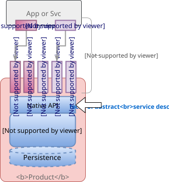
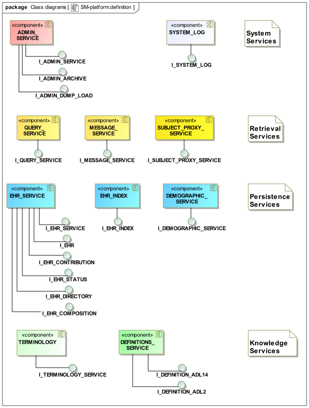
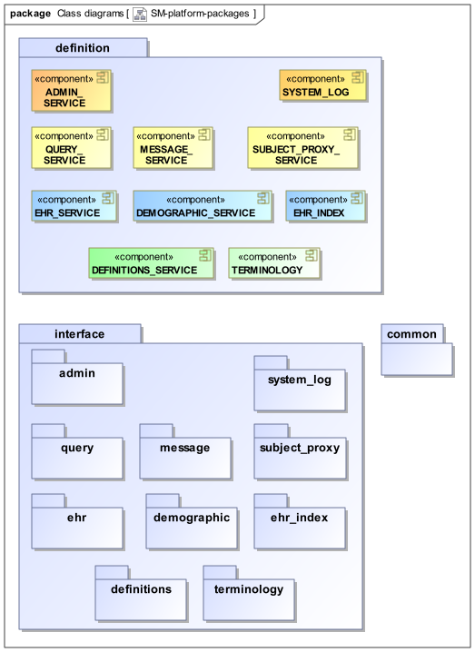

Overview
General Assumptions
In order to specify concrete service interfaces (i.e. APIs) to openEHR platform product components, a formal, abstract definition of the platform interfaces is useful, so as to be able to state the formal interface call semantics independent of any particular implementation technology. This approach clarifies the distinction between required semantics and the details contingent in any concrete technology, such as SOAP/WSDL, REST, and so on, each of which has its own characteristics and rules.
It is assumed that native APIs are network-accessible via one or more communications protocols, each with an appropriate protocol adapter. Such protocols include the text-based, such as SOAP/WSDL and REST, as well as the many binary protocols, including Google Protocol Buffers, Apache Thrift, Kafka, ZeroC ICE, and Advanced Message Queueing Protocol (AMPQ). The focus of this specification is the nominal 'native API' that is reached by any of these methods, as shown below.

openEHR Platform Model
The following figure illustrates the components of the abstract openEHR Platform, along with their interfaces.

Each component has one or more associated interfaces, i.e. abstract service definitions which define a transactional interface to the service represented by the component. Each interface consists of a number of calls, and each call is defined in an abstract way, i.e. independent of the representations and expressions required by a concrete protocol.
This view does not attempt to define a real product architecture as would be developed by an openEHR platform implementor, but it does establish a formal equivalent of any such architecture. Practically, this entails standardised naming of components and the semantics of their logical interfaces so that platform procurers and users can unambiguously refer to the 'Admin service' or the 'EHR service' within technical or commercial documents. The abstract service architecture described here provides platform implementers a standard reference definition for mapping agreed functionality (such as requested in a tender or other solicitation) into their own architectures, which may be organised quite differently.
The services are as follows.
| Service | Description |
|---|---|
Definitions |
Service enabling upload and querying of definition artefacts, including archetypes, templates and queries. |
EHR |
Versioned persistence service for EHRs. |
Demographic |
Versioned persistence service for demographic data. |
EHR Index |
EHR id / demographic subject cross-reference service. |
Query |
Service providing AQL query retrieval for EHR, demographics and other content services. |
Terminology |
Service providing access to terminology, including intentional value sets. |
Message |
Message import and export service, supporting multiple message formats as we as EHR Extracts and documents. |
System Log |
IHE ATNA-compliant system log. |
Subject Proxy |
Service for registering subject-focussed data-sets that provide a 'proxy' picture of the subject over time. |
Admin |
Service providing administrative facilities on all services in the installed environment, such as back-up. |
Interface Calls
Regardless of the internal organisation of real product architectures, agreement across a community of producers and users of products that claim to conform to a published platform specification, must by definition be based on something formally statable and testable. As noted above, this is described here in the form of logical components which have logical interfaces, each consisting of a set of calls, of which the latter constitute the finest level of specification.
A logical interface call is understood here in the standard computer science manner, i.e. as a callable routine with a formal, typed signature. Good practice usually dictates that such routines should take the form of either pure functions, or pure procedures, but not both: side-effect producing functions should generally be avoided. In other words, interface calls are either queries that return something but do not change state, or commands that cause a change, but don’t compute or return anything. The separation is sometimes known as command / query separation.
The signatures of query and procedure calls thus take the following syntactic forms:
func: T -- function with no arguments
func(arg1: X, arg2: Y, arg3: Z): T -- function with arguments
proc -- procedure with no arguments
proc(arg1: X, arg2: Y) -- procedure with arguments
One of the key assumptions of this specification (and indeed formal standardisation in general) is that although real implementations of a platform may have differently structured components and different naming of functions, arguments etc, that there is a formal equivalence between calls specified in a published standard and those in the implementation. Thus, it must be the case that even if three calls in an implementation are required to achieve the effect of a single call in this specification, that the conditions described here prior and after the call(s) are the same in both cases, and also that the three calls taken together are transactionally protected. If this is not true, it implies that the implementation is introducing unspecified semantics.
Anatomy of an Abstract Call Specification
A fuller specification of any function or procedure includes its semantics, stated in terms of pre-conditions, post-conditions and exceptions, along with documentation of the same. This is exactly as found in any standard library in most programming languages, and indeed, standardised meta-data keywords and labelling have evolved in most programming documentation systems to support exactly this kind of specification, even where the language doesn’t directly support some of its features, such as pre- or post-conditions.
This specification uses the same form of specification, which can be illustrated as follows:
Call |
|
This call creates a new EHR in the EHR persistence service, with …. |
Arguments |
|
A UUID that will be used as the EHR’s |
Pre-conditions |
Valid_id: |
No EHR with |
Post-conditions |
Ehr_created: |
An EHR with |
Exceptions |
|
EHR with |
|
Caller authorisation failure. |
The above kind of specification can in general be easily mapped to any concrete API technology. In each case, how the arguments are expressed, details of serialisation (for text-based technologies like SOAP and REST), error handling, etc, will be different. Google protocol buffers for example uses an OMG IDL-like approach to specification, i.e. structured type definitions. REST on the other hand is a web-based type of API normally mapped onto HTTP verbs, URIs and HTTP error codes.
The intent of the current specification is thus to express the abstract element of each interface call, so that both back-end semantics can be correctly designed, and API definitions can be correctly written and tested.
Global Conventions
Functional Style
Various ways of expressing service interface functions to underlying resources are possible, with choices available in various dimensions:
-
stateless / mostly stateless / stateless;
-
approach to access control and authorisation;
-
single interface / composed interface ;
-
full argument lists / parameter-carrying object arguments / mixture.
In real implementations, different choices will be made; all that matters is that the implementation contains one or more calls that can be made for each call documented here, with the same transactional semantics. Consequently, the functional style used in this specification does not need to be exactly replicated in either a back-end or an API, only the resulting semantics do.
Here we use a nearly stateless approach, where the exception is to use a second call to determine success status and any error information. This can easily be mapped to a fully stateless style, as would be used in a server driven by a managed request queue. This approach enables functions to be declared in a standard programming style, with return types reflecting successful execution. The function declarations are accordingly of the following style:
// definition
interface I_EHR_SERVICE : I_STATUS {
Boolean has_ehr(UUID an_ehr_id);
UUID create_ehr();
UUID create_ehr_with_id(UUID an_ehr_id);
}Authentication and authorisation is assumed to have been dealt with before any particular call has been made by a combination of standard authentication technologies (e.g. OAuth, RFC 7235) and role-based access control.
Failures are dealt with by calling a standard function last_call_failed() and if True, calling last_call_status() which returns a structured error object. This enables the recording of errors (such as authorisation failure), pre-condition exceptions (generally relating to argument vaidity) and server exceptions (equivalent to post-condition or invariant exceptions). This leads to the following typical call sequence for calls defined in this specification.
I_EHR_SERVICE i_ehr_service;
CALL_STATUS call_status;
UUID test_result, result, an_ehr_id;
try {
test_result = i_ehr_service.create_ehr_with_id(an_ehr_id);
if (i_ehr_service.last_call_error())
call_status = i_ehr_service.last_call_status();
else
result = test_result;
}
catch (PreConditionException e) {
// deal with pre-condition violations
call_status = new CallStatus(CallStatuses.precondition_violation)
// set any other information
}
catch (Exception e) {
// deal with other exceptions
call_status = new CallStatus(CallStatuses.exception)
// set any other information
}
// package up call_status, result in responseApart from error-handling, the interfaces are stateless in the sense that any single call constitutes a self-standing transaction on the back-end service, i.e. a transaction that when executed on the service will leave it in a consistent state.
The above illustrates just one pattern of calling in a server. Another common style is to include results as 'out' parameters, and to use the return value to return call status. Either style can be used, and can be trivially mapped from one to the other. No such code is intended to implemented directly; the above is merely a way of explaining the semantics within context of the interface calls documented in this specification.
List Handling
Calls that produce a container result potentially containing unlimited numbers of elements can be managed in a typical 'DB cursor' fashion, i.e. by setting the following parameters:
item_offset-
Optional parameter specifying offset in query result items to at which to start returning items, starting at zero. An offset of 1 means that the first item to return is the 2nd item. Zero signifies that items starting from the first item should be returned.
items_to_fetch-
Optional parameter specifying number of result items to fetch, starting from the item indicated by
item_offset. A zero means 'all'.
Global Naming Conventions
The following naming conventions are used for naming parameters throughout this specification, where they apply.
| Term | Description |
|---|---|
|
The value for an EHR identifier, stored under |
|
The value of a |
|
The value of a |
|
The value of a previous |
|
A placeholder for either |
|
A date-time in ISO 8601 format (e.g. |
Package Structure
The openEHR Platform Service Model package structure is illustrated below. It consists of the packages common, definition and interface. The second contains the service components, while the third contains the interfaces attached to each service component.
